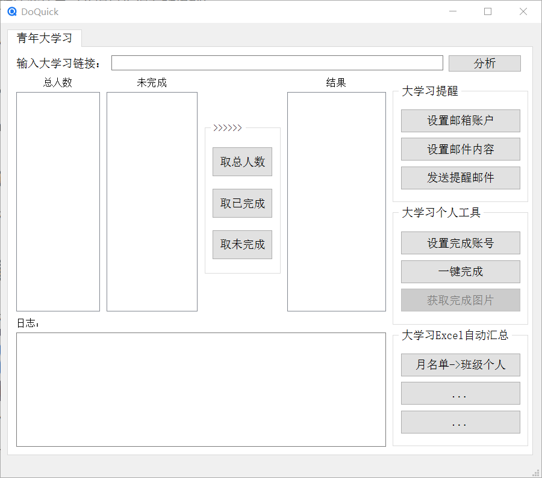

DoQuick介绍
DoQuick介绍
开发背景
日常班级里经常有一些诸如统计Excel表格信息、统计并且催促同学打卡等的事务，程序固定且繁琐，遂有了开发一款处理自己日常事务软件的想法，改软件应运而生。
需求
- 爬取信息：统计信息在金山云文档里，所以需要爬取云文档获取同学们的完成情况。
- 筛选名单：有时需要完成同学的名单，有时又需要未完成同学的名单，所以加了交集与补集的功能。
- 批量发送邮件：要及时提醒未完成的同学，由于无论选哪一种社交软件，即使有批量选取发送信息也很麻烦，因为你要一个一个点，而且还需要加好友才能发送信息（你可能会说为啥不发群里 0.0, 很多人是屏蔽群消息的，即使发群里他们可能也看不到，如果因此遗漏较多的人会很麻烦），因此可以利用邮箱发送，一般QQ都会提示邮箱的信息。
- 自动化Excel事务：这种固定且繁琐的事务最适合自动化了。
- 自动打卡：其实这种脚本添加到系统计划里自动执行最方便了，但由于不是每天执行，而且每周我都会打开该软件，所以干脆就集成在里面了。
功能实现
1. 爬取信息
利用Selenium库，可以很方便的实现，由于该篇文章只是介绍，技术细节就不多概述了。
2. 筛选名单
这个利用前面爬取的信息可以很方便实现。
3. 批量发送邮件
这一步的工作量主要在于信息收集，要收集【同学姓名<=>学号<=>qq】数据并存储到JSON文件里，QQ官方有个Q群管理web页面，可以用爬虫很方便的获取这些信息（前提是你得有班级群）。
获取到信息后，利用smtplib库发送邮件。
4.自动化Excel事务
这个利用Pandas和xlwings可以很方便的实现。
5. 自动打开
抓包并且分析后，向服务器发送完成封包即可，同时可以获取到图片链接。
软件演示截图
桌面图标

风格模仿facebook旧图标，内层是D，外层是Q，是软件名DoQuick的首字母简称。软件主界面，至少布局还凑活。

本博客所有文章除特别声明外，均采用 CC BY-NC-SA 4.0 许可协议。转载请注明来源 WangCAC的博客！